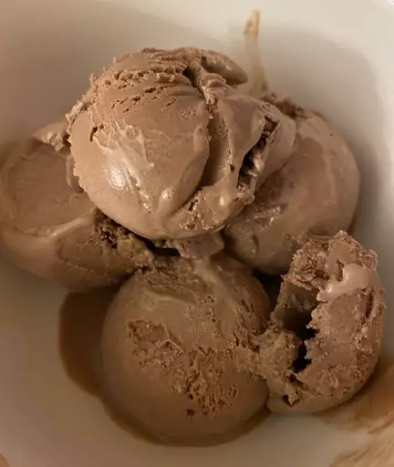

Very chocolate ice cream

A rich creamy custard style chocolate ice-cream. Prep time of
10 mins, cook time 10 mins, additional time 4 hours. In total
4 hours and 20 mins. Has a serving size of 8 and yield of 1 quart.
Ingredients
- 1 cup milk
- 3/4 cup sugar
- 2 tablespoons unsweetened cocoa powder
- 1/4 teaspoon salt
- 3 egg yolk, lightly beaten
- 2 ounces semisweet chocolate, chopped
- 2 cups heavy cream
- 1 teaspoon vanilla extract
Steps
- Combine milk, sugar, cocoa powder, and salt in a saucepan over
medium heat. Bring to a simmer, stirring constantly.
- Place egg yolks into a small bowl. Gradually whisk in about 1/2
cup of hot milk mixture, then return to the saucepan. Heat and stir
until thickened, but do not boil.
- Remove from the heat and stir in chopped chocolate until melted.
- Pour into a chilled bowl and refrigerate, stirring occasionally,
until cold, about 2 hours.
- Stir in cream and vanilla. Pour into an ice cream maker and freeze
according to manufacturer's directions.